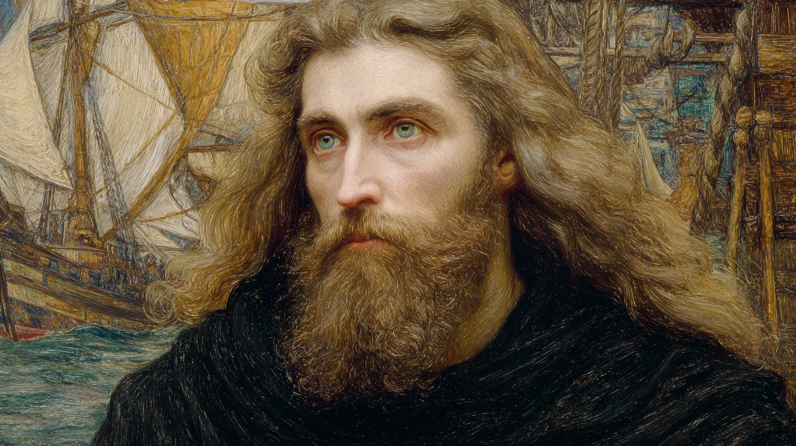

The Wandering Questioner — Magus of the Lumen Mare — Founder of Sjórseiðr
"He sees clearly, questions deeply, and teaches well."

Þorleif Solvason was born in 1173 in Kaupang, Norway, during the height of the Norwegian Civil Wars — a period when competing factions tore the kingdom apart and violence made a Gifted child not merely strange but actively dangerous. The Gift manifested young, perhaps age seven or eight, and in a community already fraying with suspicion, the instinctive distrust it provoked in neighbours became something worse than social difficulty. It became threat.
He departed Norway around age ten. The specific circumstances remain blurred — childhood trauma, Solving himself acknowledges, is a poor archivist. What he knows: a ship, cold water, a city he did not recognise, strangers who did not speak his language. He arrived in Bruges alone and speaking only Norwegian, carrying nothing.
Lucretius, a Criamon magus of Domus Luminis in Bruges, found the boy in circumstances that the old magus later described as almost choreographed. He recognised something beyond the raw Gift — a natural disposition toward pattern-recognition, a compulsive asking of why even in conditions of fear. He took the child as his apprentice and gave him a new name that honoured both qualities: Solving Epicurusson.
The apprenticeship lasted fifteen years and was organised around a single conviction: that Hermetic training and philosophical education were inseparable, that a magus who could not explain what he believed had not yet understood it. Lucretius grounded his student in the Enigma's fifteen foundational riddles, in Avicenna's synthesis of Aristotelian and mystical thought, and in the works of the Roman Lucretius — the atomistic materialism and Epicurean ethics of De Rerum Natura, which gave the apprentice both a worldview and a name.
Solving passed his gauntlet in 1198, age twenty-five. Lucretius's written assessment has circulated in truncated form among Rhine magi: "He sees clearly, questions deeply, and teaches well. He will struggle with practical matters, for he seeks truth more than advantage. But he is truly Criamon."
One year post-gauntlet, Lucretius brought Solving south to the covenant of Al-Qassas in Valencia, to study Arabic philosophical texts bridging Hermetic, Islamic, and ancient Greek thought. It was Solving's first journey as a full magus, and it produced two lasting consequences: a deep familiarity with Iberian magical scholarship, and a friendship with Khalida bint Tariq, a Flambeau maga whose rigorous logical frameworks and profound knowledge of Avicenna made her, in Solving's own words, the first intellectual equal he had ever met.
"I cannot explain the mechanism, but I see shadows gathering around your home. The pattern suggests disruption from within and without. I beg you to prepare contingencies — secure what cannot be replaced, establish exits you do not need to use. The Enigma does not always permit precise warning." — Letter from Solving to Khalida bint Tariq, c. 1201
His premonitions regarding Al-Qassas proved accurate. The covenant suffered a catastrophic disruption; Khalida survived in part because she had heeded his warnings and prepared accordingly. She has not forgotten.
Throughout the years following his gauntlet, Solving experienced recurring visions of the North Sea — not dramatic prophecy, but a persistent, accumulating sense that his path led north and onto water, toward something he could name only as freedom from the political entanglements that increasingly oppressed him about static covenant life. In Criamon terms he understood these as the Enigma calling him toward a truth he had not yet articulated. By 1205, the vision had become a plan, and the plan had acquired two essential collaborators.
Solving stands at age thirty-two, the principal architect of Sjórseiðr, a mobile covenant of vessels operating across the North Sea and Baltic. He captains the Lumen Mare, a reinforced cog serving as his sanctum, laboratory, and flagship. The covenant is newly founded; its structures are still being negotiated. The vision is clear. The execution is ongoing.
A mind that processes abstraction with exceptional ease, a communicative presence that makes difficult ideas accessible, a physical reality that has never particularly interested him. Solving moves with deliberation rather than speed, often appearing to finish an internal argument before committing to an external action. He is left-handed — a detail some find significant and he finds irrelevant.
Generous: Solving shares knowledge and resources without calculation, and takes genuine delight in illuminating complex ideas for students. His Good Teacher virtue is not coincidental — Lucretius trained him deliberately toward it, believing true understanding requires the ability to transmit. The generosity has limits: he values sincere seeking over convenient shortcuts.
Cryptic: Years studying the Enigma have given him a habit of speaking in layers. He is not always aware he is doing this, which makes it considerably more frustrating for interlocutors than if it were deliberate. Questions answered with questions. Metaphors nested inside metaphors.
Savvy −2: For all his philosophical brilliance, practical political maneuvering consistently defeats him. He assumes people are generally honest, misses subtle power plays, focuses on what should be rather than what is. This is not naivety — he can describe the problem abstractly with perfect clarity. He simply cannot apply the description in real time.
The profile reflects his philosophical priorities precisely. Vim at 5 represents his deepest conviction: understanding raw magic itself, the substrate beneath all technique, is the beginning of genuine knowledge. Aquam at 5 is practical and thematic — the sea, the mutable, the flowing. Mentem and Imaginem reflect his interest in perception, truth, and the gap between appearance and reality. Auram is developing. Everything terrestrial is incidental. He is not a combat magus; his repertoire is built for navigation, revelation, and protection, in that order.
* Includes +2 from Puissant Magic Theory
His spell repertoire is almost entirely non-combative, oriented toward navigation, perception, protection from weather, and the manipulation of wind and water. The lab texts of the Sjórseiðr covenant reflect his influence heavily. Higher-level work remains undeveloped; he has prioritised breadth of magical knowledge over combat depth, a choice that serves his vision well and would serve him poorly in a Wizard's War.
When Solving casts, two phenomena accompany the effect. First, a ripple: a subtle undulating wave propagates outward from the point of casting, visible in air, water, or earth depending on the spell's nature — as though the magic is a stone dropped into a still surface. Second, a hum: a low, resonant sound, like a tuning fork struck against the hull of a ship, or the harmonic vibration of rigging in a particular wind. The two combine to produce a sensation that observers often describe as both calming and faintly uncanny.
The sigil is consistent across all his work and has been documented reliably enough to serve as identification. A Quaesitor familiar with his casting would recognise it; a witness describing "waves in the air" and "a sound like a bell heard underwater" is almost certainly describing Solving's magic.
The Lumen Mare ("Light of the Sea") is a reinforced cog serving simultaneously as Solving's sanctum, personal laboratory, and the flagship of the Sjórseiðr fleet. The laboratory occupies the forward hold, with his private quarters aft of it. Space constraints have required careful prioritisation.
| Trait | Value | Notes |
|---|---|---|
| Size | −1 | Confined to hold space; large-scale enchantments require repositioning equipment |
| Refinement | 0 | Basic setup; not yet improved beyond initial configuration |
| General Quality | +0 | Standard; superior equipment partially offsets other limitations |
| Upkeep | +1 | Moisture, salt, and motion require continuous maintenance of instruments and books |
| Safety | −2 | Ship movement introduces risks; fire in a confined wooden space is not an abstract concern |
| Health | −1 | Limited fresh air; below-decks conditions during poor weather are poor for extended study |
| Aesthetics | −1 | Functional and Spartan; he considers this appropriate |
| Intellego Specialty | +1 | The ship's magical alignment and the sea's inherent divinatory character |
| Aquam Specialty | +1 | Immersion in the sea's magical resonance; consistent and reliable |
Extended laboratory work is impractical during autumn and winter North Sea crossings. Solving schedules his major research projects for summer months when the ship can remain in sheltered harbour for several weeks at a time. He has developed an unusually efficient approach to interrupted laboratory seasons, which may be related to his Free Study virtue and his tolerance for unconventional study conditions.
Solving's personal books, as distinct from the Sjórseiðr covenant library. Several were gifts from Lucretius at his gauntlet; the Arabic philosophical texts were acquired in Valencia.
The formative relationship of his life. Lucretius gave him a name, a philosophy, a method of thinking, and fifteen years of careful instruction. Solving does not idealise his parens — he is aware of Lucretius's own blind spots, particularly his tendency toward impractical abstraction — but the debt is genuine and the affection real. They correspond regularly. Lucretius follows the development of Sjórseiðr with the satisfied attention of a man watching his most ambitious experiment proceed as hoped.
His intellectual equal and the most important friendship of his adult life. Where Solving asks questions that open new avenues, Khalida provides the rigorous logical frameworks that determine which avenues lead somewhere. Where she builds precise arguments, he sees connections she has missed. She saves him from his impracticality; he opens doors she did not know existed. She has never forgotten that he warned her — accurately, at personal cost — about the danger to Al-Qassas, and that she survived partly because she trusted him. Neither of them discusses this directly. It is simply present.
The sea does not ask where you are from. It asks only whether you are paying attention. — Solving Epicurusson, to a student; transcribed by Khalida bint Tariq
His relationship with Astrid is built on mutual practical respect. He values her decisiveness — a quality chronically absent in himself — and her deep expertise in Norse maritime tradition and its intersection with the Gifted. She appreciates that he is genuinely interested in her knowledge rather than merely deploying her as a resource, and that his Gentle Gift means she can be comfortable around him, something she rarely experiences with Hermetic magi. He finds her directness a relief after years of Hermetic political obliqueness.
Solving has no enemies of consequence, which is both a virtue and a symptom. He has spent his post-gauntlet years developing his vision rather than accumulating Hermetic alliances or antagonisms. The Bjornaer covenant at Crintera regards the fleet's vis-gathering with proprietorial suspicion. Several Rhine Tribunal magi find the mobile covenant concept philosophically incoherent. He is aware of these concerns and has so far addressed them primarily by not being in the same place long enough for them to solidify.
Sjórseiðr — from Old Norse sjór (sea) and seiðr (magic, prophecy) — is the covenant Solving has spent five post-gauntlet years conceptualising and the last year assembling. It is not a place. It is a fleet.
Currently a Weak Covenant by resource classification: a limited but curated library (three Art summae, one Ability summa, four tractatus); 200 levels of spell lab texts; four vis sources producing 4 pawns annually. The scarcity is known and deliberate — a wealthy static covenant would defeat the purpose. Resources are expected to grow through discovery, trade, and the fleet's mobile access to phenomena that fixed covenants cannot easily reach.
The mobile covenant answers a specific set of problems that static covenant life creates: territorial disputes, obligations to local nobles, political entanglements with neighbouring covenants, the accumulation of enemies through mere proximity. By owning no land, Sjórseiðr creates no territorial claims to defend. By moving, it avoids being the subject of sustained political campaigns. By remaining small, it avoids the factional dynamics that large covenants inevitably produce.
This is not cynicism. It is, in Solving's framework, Epicurean ataraxia applied to institutional design: the removal of unnecessary sources of anxiety, so that genuine inquiry can proceed without distraction. The parallel to his personal history — the child who fled rather than fought — is one he would acknowledge if asked, and then probably spend forty-five minutes examining.
Solving Epicurusson is a philosopher who happens to be a magus, rather than the reverse. This is not a criticism. The philosophical disposition produces genuine strengths: the teaching ability, the premonitory capacity developed through decades of contemplative practice, the Vim mastery that comes from being genuinely curious about magic as a subject rather than merely as a tool. His Gentle Gift makes him uniquely suited to the mobile covenant's diplomatic requirements. A magus who does not frighten harbour officials or merchant captains is not a minor asset.
What he is not, and has never been, is politically functional. His Overconfident flaw and his Savvy −2 combine into a specific failure mode: he will correctly identify the deeper truth of a situation and then walk directly into its most obvious political trap while explaining why the trap doesn't matter. Khalida has prevented this from becoming catastrophic on at least three documented occasions. Whether this is sustainable at Tribunal scale remains to be seen.
He wants the covenant to become what he has imagined: a mobile centre of genuine inquiry, unencumbered by territorial obligation, capable of contributing to magical knowledge in ways static covenants cannot. He wants to understand — specifically and deeply — what his premonitions are showing him about the North Sea, about the icebound figure, about the something-large in multiple magi's visions. He wants his students to exceed him.
He also wants, though he would express it more obliquely, to have made the departure from Norway — the cold ship, the strange city, the years of frightened concealment — into something that was worth it.
Epicurus taught that ataraxia — the tranquility we seek — is not found in the absence of question but in the presence of genuine inquiry. To ask clearly is already to be at peace. — From Solving's teaching notes; recovered copy in Sjórseiðr archive
This dossier is maintained in the personal records of the Sjórseiðr covenant. It reflects the founding year's understanding and should be updated following any significant Twilight episode, tribunal appearance, or revelation regarding the subject's origins. Khalida bint Tariq has reviewed and approved this assessment. Astrid Eriksdóttir declined to review it on the grounds that she already knows him.